Home
Map
Destinations
Resorts
About
Destinations
Destinations in Wayanad
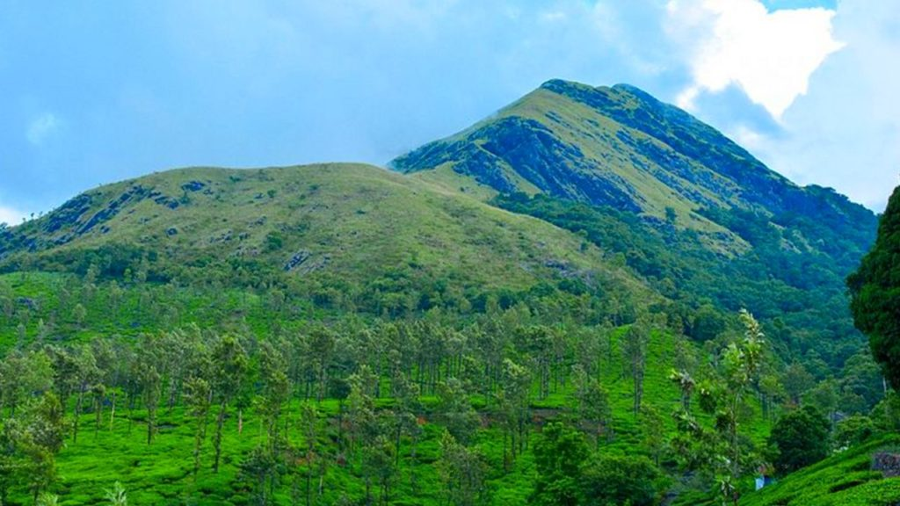
This is the highest peak in Wayanad and is most famous among trekkers.
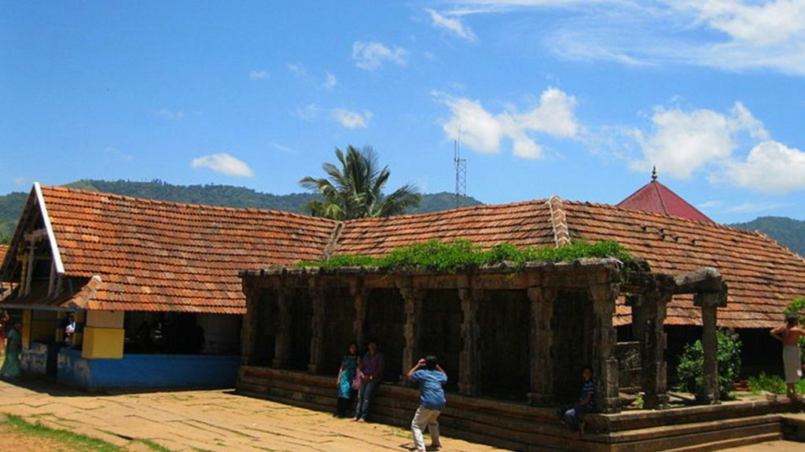
The Thirunelli temple in Wayanad is one of the most famous temples in City and many people come here for worship.
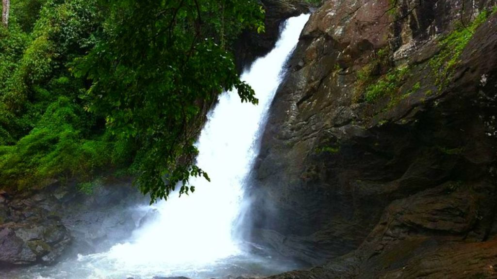
Soochipara Waterfall is one of the largest waterfalls in Kerala and most beautiful as it is surrounded by lush green landscapes.
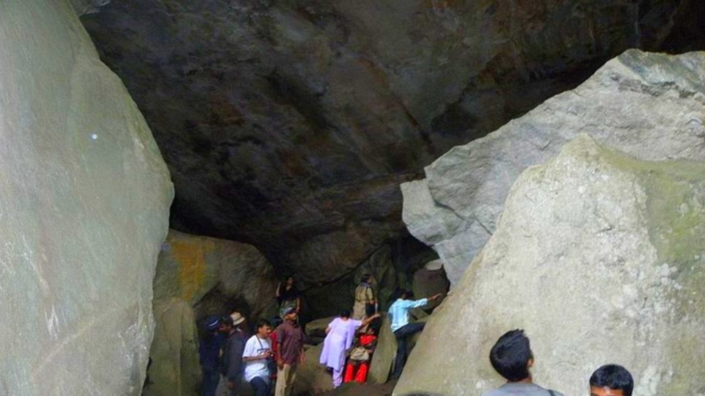
Dakkal cave is believed to be from the time of 6000 BC and has cave art.
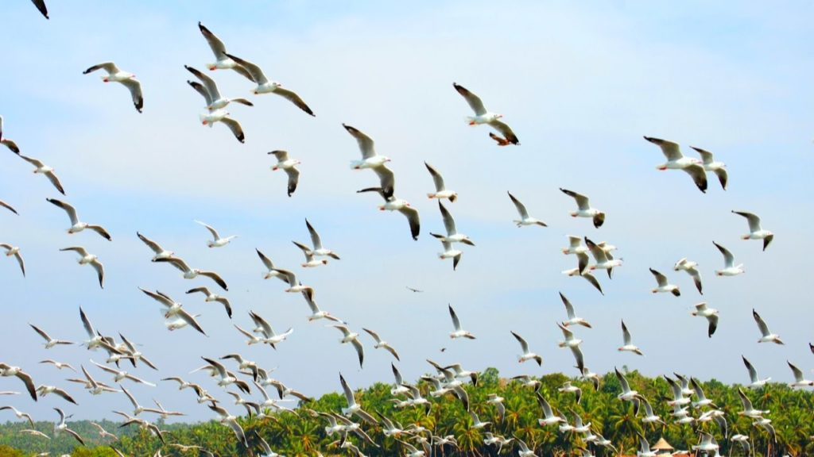
This Sanctuary is one of the most visited places in Wayanad.
There is a wide range of flowers that are showcased here.
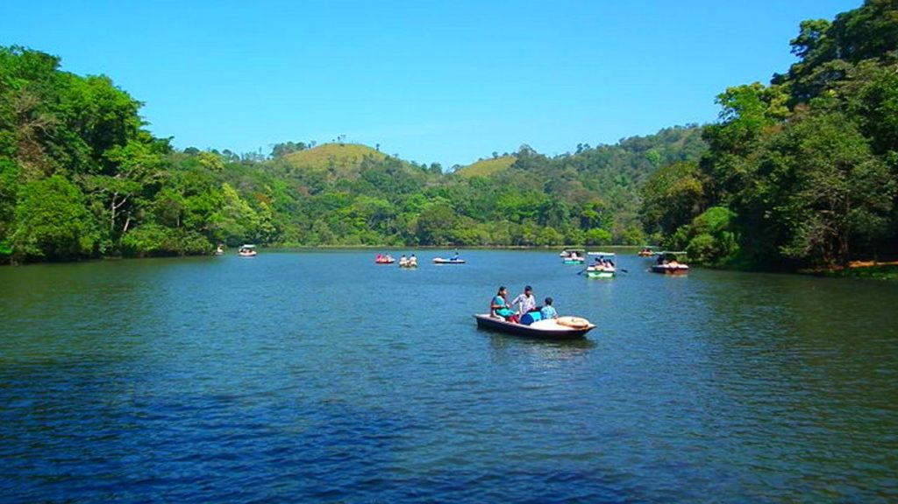
This Lake is a freshwater lake spread over 8.5 hectares and is about 6 meters deep.
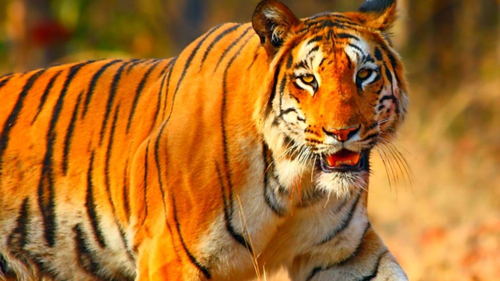
This is the second-largest sanctuary in Kerala and homes to many animals like tigers, elephants, deer, and beautiful birds.
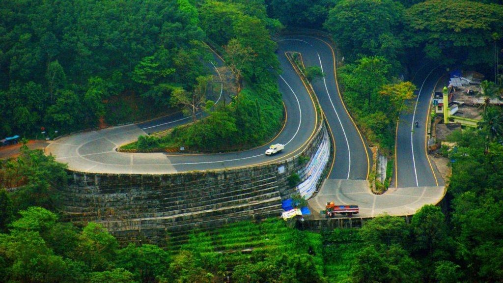
Lakkidi Viewpoint is a passage in Wayanad, and the area is always covered with mist.
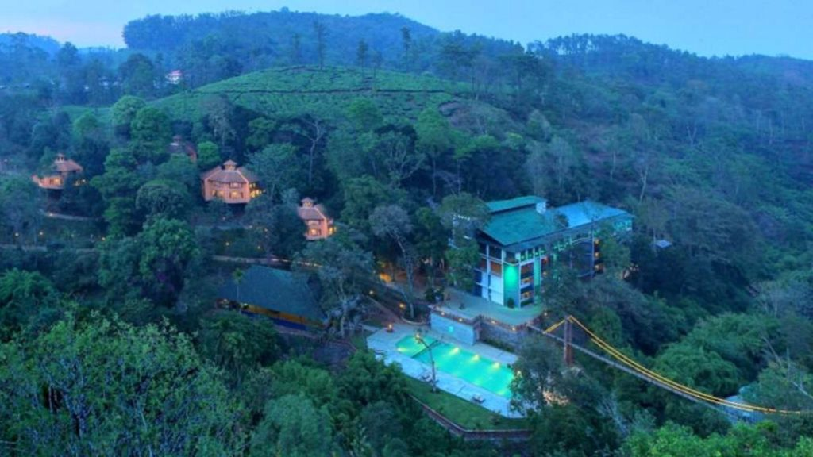
It is the most beautiful place to stay in Wayanad.
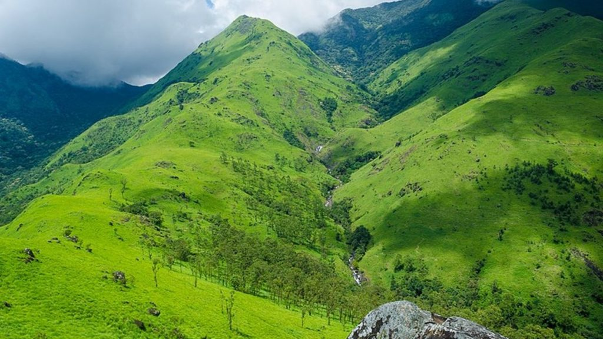
Banasura Hill is famous among trekkers and campers as the place is open to everyone and doesn’t require any fee.
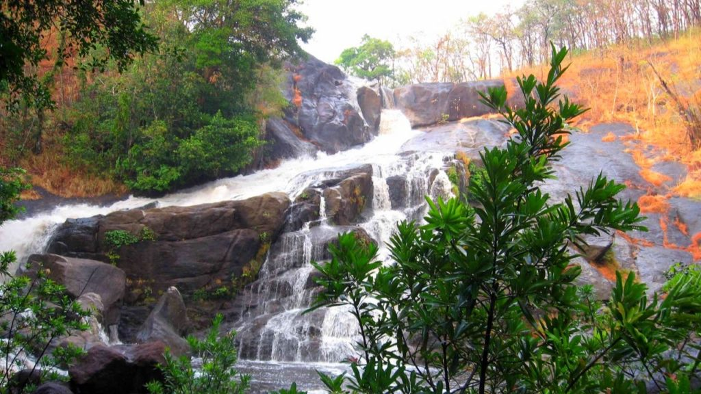
This waterfall one of the major attractions in Wayanad and it is one of the largest waterfalls in Kerala.
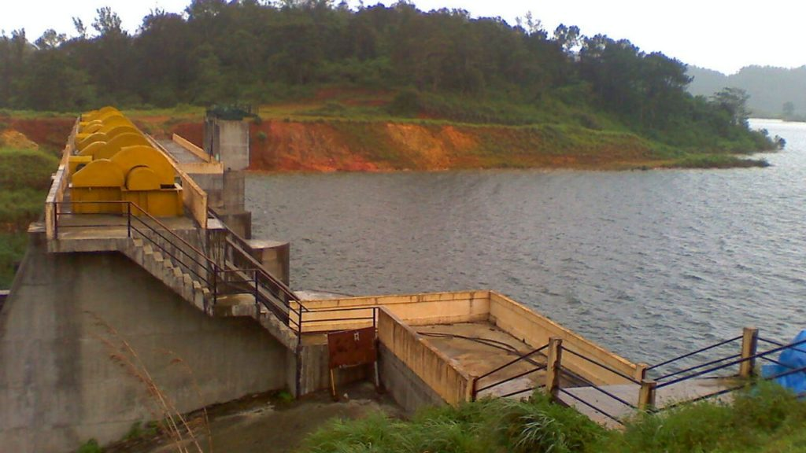
The Banasura Sagar Dam is Asia’s second-largest dam and is situated in Wayanad district.
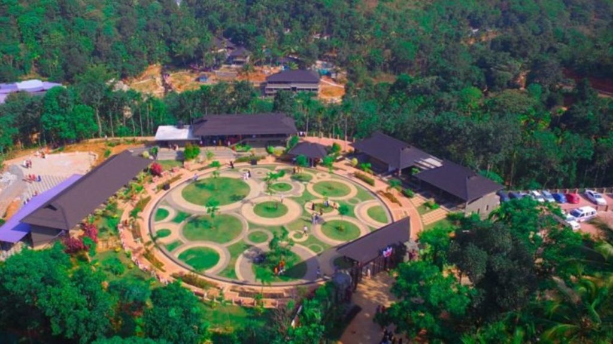
This park is one of the biggest parks in the country and has activities for every age group.
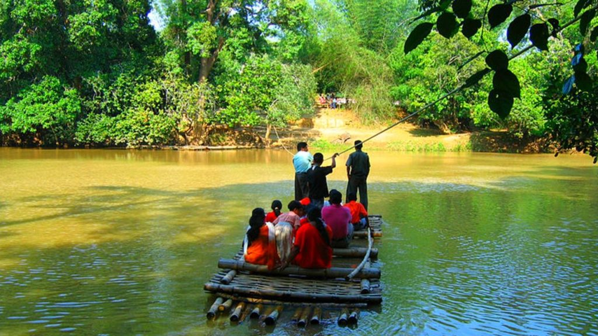
Explore Un-touched beauty of Kuruva Island